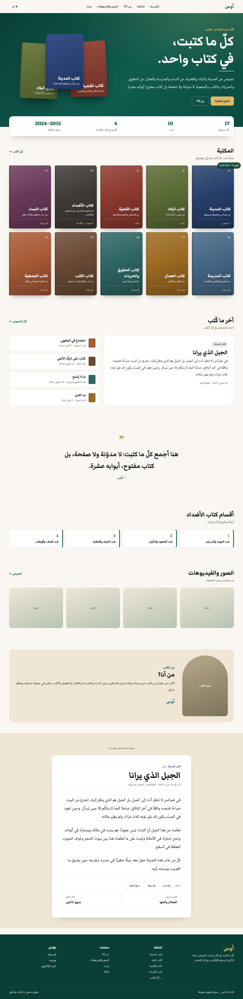
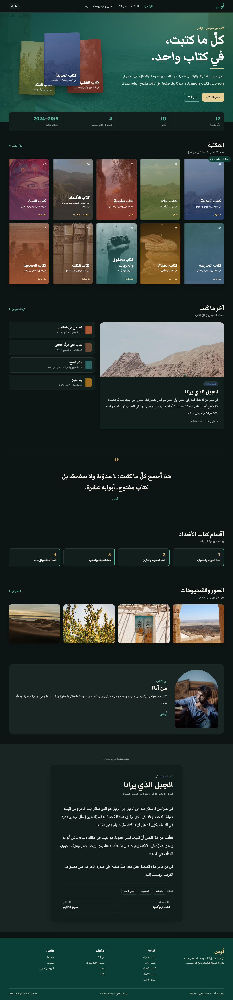
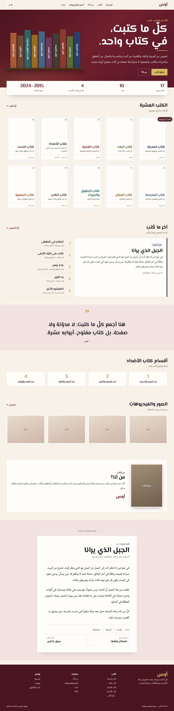
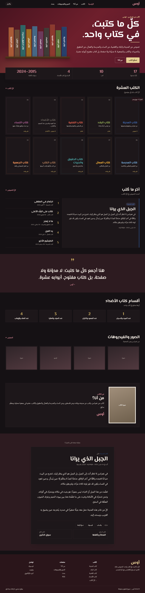
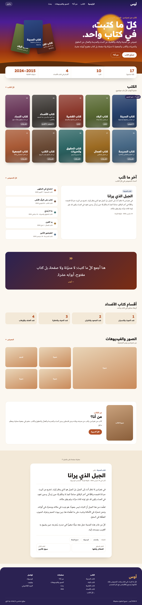
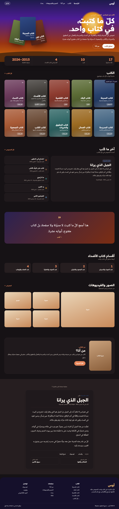
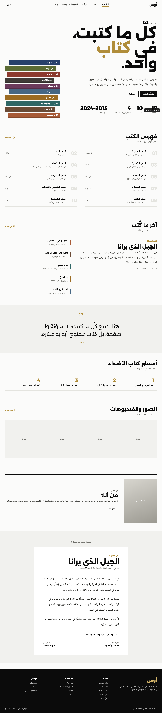
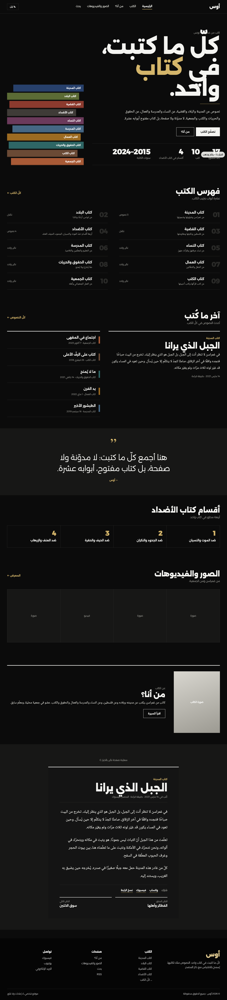

المحتوى نفسه في أربعة أساليب فاخرة. في كلّ صفحة زرّ «☾ ليل / ☀ نهار» في الأعلى للتبديل بين الوضعين. افتح كلّ تصميم على الحاسوب والهاتف، ثم اختر.








البيانات المعروضة نماذج للتوضيح (الاسم «أوس» مؤقّت). التصميم المختار يُنفَّذ في الموقع الحقيقي مع لوحة التحكم.